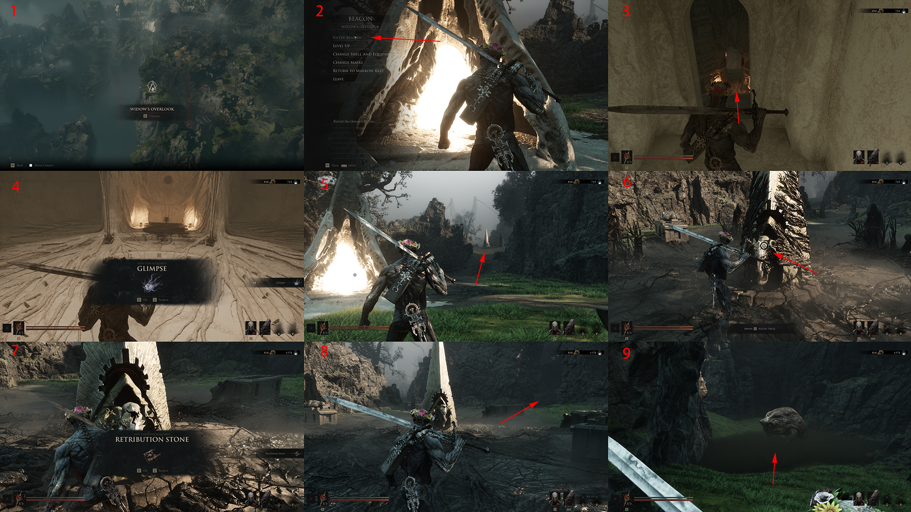

Main story · route draft
Widow’s
Overlook
A visual route from the Widow’s Overlook Beacon through the nearby trial path and onward landmark.
Original gameplay draft · route text in progress- Start
- Widow’s Overlook Beacon
- Focus
- Beacon, trial path, route reward
- Next area
- Mushroom Village
Follow the marked trail
- Open the Beacon travel point shown in panel 1, then enter the Beacon in panel 2.
- Use the interior exit in panels 3–4, then follow the outside arrow in panel 5.
- Begin the nearby trial at the marked monument in panel 6.
- Panel 7 marks the route reward; continue using panels 8–9.
